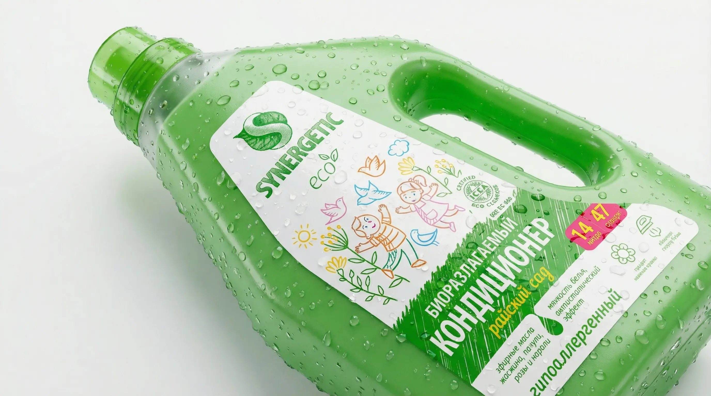

Возможности производства
Технологические решения для массового и премиум сегментов
Особенности упаковки моющих средств:
Бытовая химия — это высококонкурентный рынок. Этикетка должна быть не только дешевой при массовом тираже, но и функциональной.
- Эффект No-Label Look: Суперпрозрачные пленки создают иллюзию того, что текст напечатан прямо на самом флаконе. Идеально для премиальных гелей и мыла.
- Многослойные этикетки (Peel-off): Двух- и трехслойные этикетки-книжки для размещения подробных инструкций, ГОСТов и мер предосторожности на оборотной стороне.
- Сложная вырубка: Изготовление этикеток любой геометрической формы для точного облегания пульверизаторов, триггеров и фигурных бутылок.
- Экономия на объемах: Высокоскоростная флексопечать позволяет добиться минимальной цены за этикетку при заказе крупных тиражей для розничных сетей.

Чек-лист (PDF)
7 ошибок при заказе этикеток для бытовой химии
Скачайте бесплатный PDF-файл, который убережет вас от брака. Узнайте, как избежать отклеивания этикетки от влаги, появления пузырей на мягких флаконах и разъедания краски щелочью.
✓ Чек-лист успешно отправлен на вашу почту!
Частые вопросы
Отвечают технологи Типографии РОСТ
Что делать, если средство содержит агрессивные кислоты или щелочи?
Для таких составов мы используем специализированные полимерные пленки (PP, PE) и покрываем их сплошной защитной ламинацией или химически стойким УФ-лаком. Это гарантирует, что случайная капля средства не испортит краску на этикетке.
Отклеится ли этикетка, если бутылка постоянно стоит в мокрой ванной?
Абсолютно исключено. Бумажные этикетки действительно могут размокать, поэтому для бытовой химии, шампуней и гелей мы применяем исключительно синтетические пленки в сочетании со специальным влагостойким клеем.
Делаете ли вы этикетки для мягких выдавливаемых флаконов?
Да. Для тары, которая постоянно сжимается руками потребителя (например, средства для мытья посуды), мы применяем полиэтиленовую (PE) пленку. В отличие от жесткого полипропилена, она эластична и сжимается вместе с флаконом без отслоений и образования "морщин".
Можно ли напечатать этикетку, которой не будет видно на прозрачном флаконе?
Конечно! Это популярный эффект No-Label Look ("Этикетка без этикетки"). Для его достижения мы используем суперпрозрачные пленочные материалы с особым, высокопрозрачным клеем. Границы этикетки визуально растворяются на бутылке.